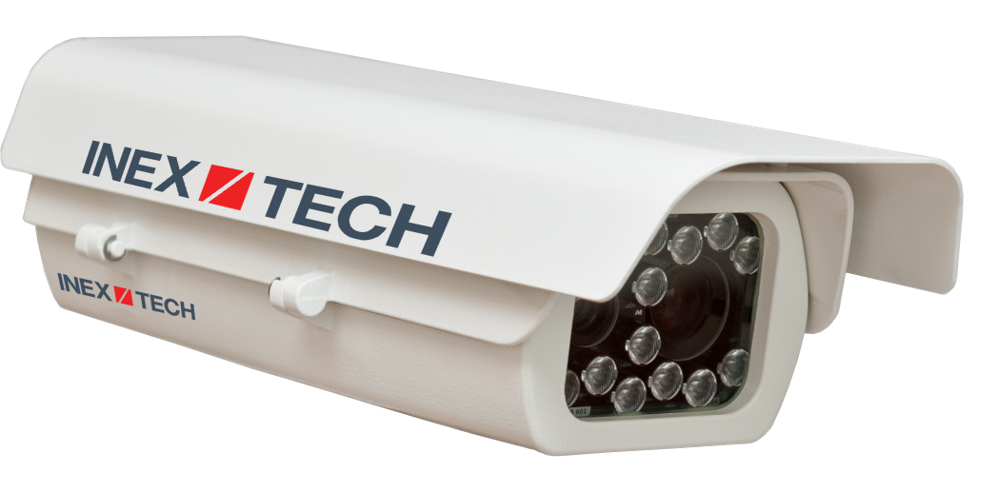
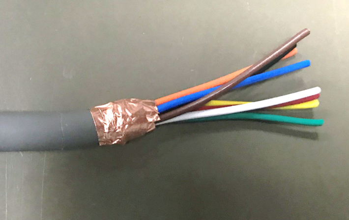
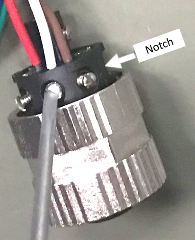
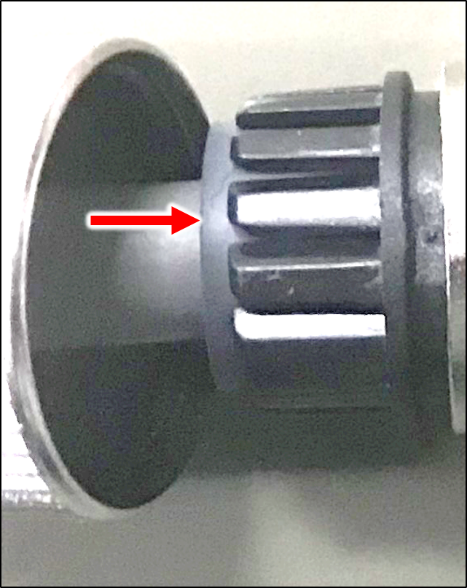
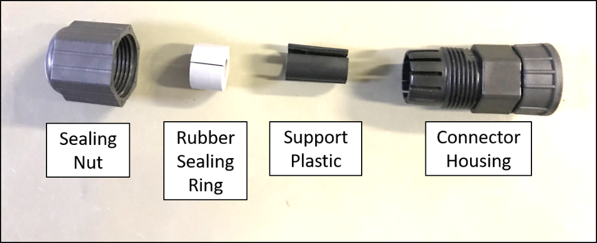
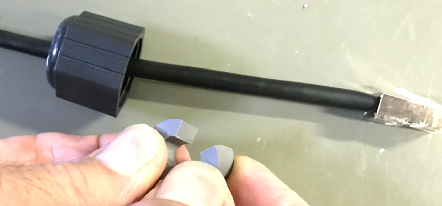
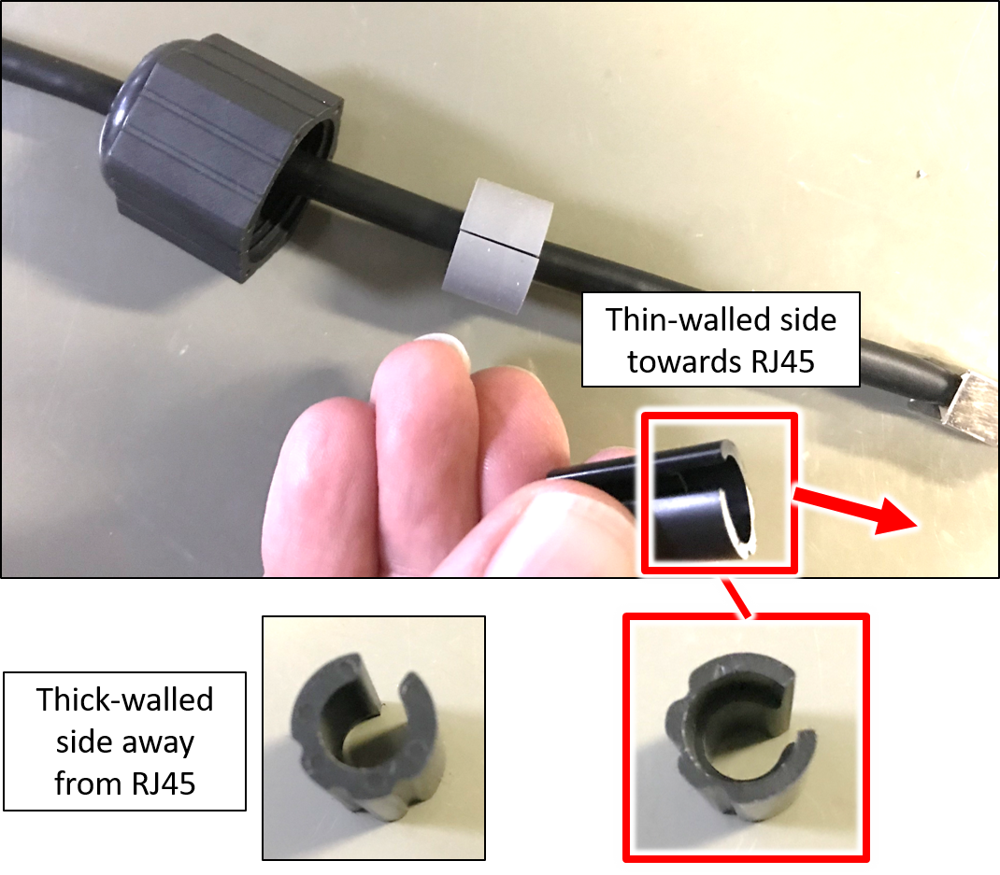
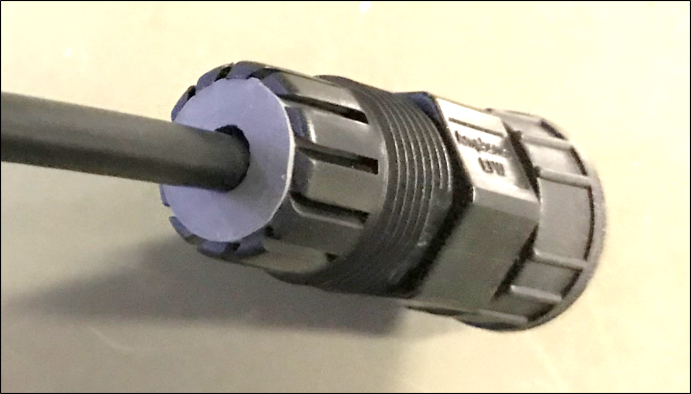
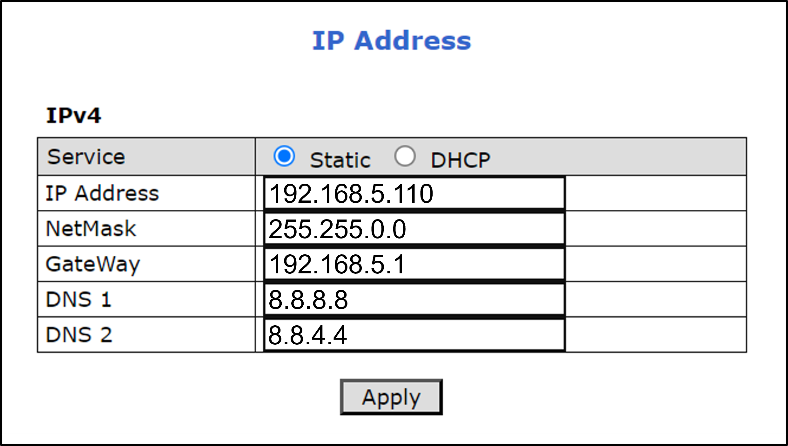

IZA800GORT Installation Guide
ALPR All-in-one AI Camera System



Click to show the Table of Contents
- 1. Recommended Reading/Related Documents
- 2. Training and Support
- 3. Checklist
- 4. Prepare Components and Tools
- 5. Plan Your Site
- 6. Prepare Cables
- 7. Install Camera System(s) and Other Components
- 8. Connect Components (Wiring)
- 9. Power Up and Set Up IP
- 10. Configure LPR/OV Camera Settings
- 11. Aim and Calibrate
- 12. Verify System Operation
- 13. Troubleshooting and Maintenance
- 14. Notices, Safety Precautions and Certifications
1. Recommended Reading/Related Documents
Click to show the Related Documents table
| Doc. No. | Title |
|---|---|
IZA800GORT User Guide |
|
IZA800GORT Quick Start |
|
IZA800GORT Technical Data Sheet |
|
Power/Signals Cable for IZA800G System Technical Data Sheet |
|
LAN Cable for IZA800G System Technical Data Sheet |
|
Product-to-Mount Mapping |
|
Mounting Hardware documentation |
|
IZ Discovery Utility software components |
|
IZ Discovery User Guide |
|
RoadView Documentation |
|
ISTHA ETC interface documentation |
|
Software End User License Agreement (includes list of open source software) |
|
IZS Strobe Illuminator Series User Guide |
|
IZPWR DIN Rail Mount Power Supplies Technical Data Sheet |
|
IZIO Digital I/O Controller Installation and User Guide |
|
NDAA Section 889 Certification of Compliance |
2. Training and Support
2.1. Training
This document does not take the place of training by Inex Technologies' certified specialists. Contact Inex Technologies to schedule training.
2.2. Support
If you have any questions, please contact our support team via our Inex Technologies Website.
3. Checklist
-
Prepare components and tools
-
Plan your site
-
Prepare cables
-
Install Camera System(s) and other components
-
Connect components (wiring)
-
Power up and set up IP
-
Configure LPR/OV camera settings
-
Aim and calibrate
-
Verify system operation
4. Prepare Components and Tools
4.1. Package Contents
-
IZA800GORT ALPR All-in-one AI Camera System
-
LAN cable or field-mountable cable connector
-
Power/Signals cable or field-mountable cable connector
-
Mounting adapter plate with screws: 3 - 18-8 stainless steel thread-locking socket head screws, 1/4"-20 thread size, 5/8" long; Allen heads; used to attach the plate
4.2. Required Accessories
The following accessories can be supplied by INEX/TECH. For documentation and part numbers, see Section 1.
| Item | Notes |
|---|---|
24VDC power supply (voltage-adjustable) |
INEX/TECH model power supply. (If you use an external illuminator, it is recommended to use an illuminator power supply separate from the Camera System’s supply.) |
Mounting Hardware (pan-tilt-roll bracket) |
Typically on gantry or wall/pole; see the Mounting Hardware documentation for details (see Section 1). |
4.3. Optional Accessories
For documentation and part numbers, see Section 1.
-
Prefabricated Power/Signals and LAN cables
-
IZIO Digital I/O Controller
-
External Illuminators
4.4. Tools
-
An Allen wrench used to attach the mounting adapter plate to the housing (if applicable); size 3/16" (4.76 mm)
-
8-wire cable for power/signals; recommended to use E119932-1/LL84201, 24 gauge (size of each wire); see Section 6.1.
-
2 mm flat screwdriver for tightening the screw terminals of the power/signals connector (see Section 6.1).
-
16 mm torque wrench for tightening the nuts of the power/signals connector, and for attaching the connector to the Camera System.
-
Network (LAN) cabling (typically CAT 5e/6 cable) with metal-body RJ45 connectors. The total length of the cable should not exceed 328 feet (100 meters). See Section 6.2 for important LAN cable information.
-
Tools for building LAN cables (wire stripper, crimp tool, etc.) and RJ45 connectors with metal bodies.
For installations that require network cabling: typically use CAT 5e/6 cable. The total length of the cable should not exceed 328 feet (100 meters).
All network cable extensions and repeaters must be shielded.
4.5. Laptop Computer
-
You will need to provide a laptop computer to use for configuration. If you will be using the laptop outdoors, the screen must be able to be seen in strong sunlight. Required software:
-
Windows 10 or above - with .NET 4.5 enabled in "Windows Features"
-
Chrome or Microsoft Edge browser
-
5. Plan Your Site
5.1. Horizontal Field of View (Capture Line)
Your camera’s Field of View (FOV) is the area that the camera can "see". You can think of this area as an imaginary rectangle rising from the lane upwards. The width of this area is called the horizontal FOV or "capture line".
See your camera’s User Guide for the horizontal and vertical FOV specifications.

Select your camera’s position so that license plates are always within the capture line and parallel to it, with the camera facing as straight at the plates as possible - as shown in the following diagrams:

5.2. Angles and Distances
|
The maximum horizontal angle allowed is 30° (to the farthest point at the end of the capture line). The maximum vertical angle allowed is 30°. Installations that position the camera at significant angles in relation to the plates will reduce the line-of-sight distances specified. |
Click to show notes for Horizontal Angle
|
The maximum horizontal angle allowed is 30° (to the farthest point at the end of the capture line). If you must capture plates on a curve, place the camera on the side of the road that minimizes the horizontal angle. At larger angles, the reflectivity of the plates is reduced, resulting in images with less contrast. For plates whose characters are very shiny (for example, silvery), the weighted angle must be less than 20 degrees. The weighted angle is the angle between a line from the camera to the plate, and a line running straight ahead from the vehicle. |
Click to show notes for Vertical Angle
|
The distance from the camera to the capture line must be within the viewing range of the LPR camera. Adjust the vertical angle so that the camera can read plates at all of their expected heights from the road. The maximum vertical angle allowed is 30°. Larger angles and/or greater mounting heights may be required in order to recognize plates on vehicles close to each other (such as in slow/congested traffic). At larger angles, the reflectivity of the plates is reduced, resulting in images with less contrast. For plates whose characters are very shiny (for example, silvery), the weighted angle must be less than 20 degrees. The weighted angle is the angle between a line from the camera to the plate, and a line running straight ahead from the vehicle. |
5.3. Position of the Sun in Relation to the Camera
The camera should not be positioned so that the rays of the sun behind the camera shine along the camera-to-plate axis. Reflective plates will cause severe glare to be reflected back to the camera, obscuring the image of the plate’s characters.
Avoid/mitigate by:
-
Not installing the camera in an east/west direction
-
Installing the camera near a building that shields it from the sun’s rays
-
Installing the camera on a short pole
-
Using a double-camera installation (2 different angles or front/rear)

5.4. Optimizing Nighttime Vehicle Overview Images (using External Illuminators)
External illuminators can be used to enhance overview vehicle image quality, for front and/or rear capture. It is recommended to use an illuminator power supply separate from the Camera System’s supply.
5.4.1. Matching Your Camera System to an Inex Illuminator
|
The wavelength of an external illuminator must be compatible with the wavelength of the internal illuminators of the Inex Camera System. |
The Inex IZA800GORT Camera Systems are typically used with the IZS series strobe illuminators.
By using the following guidelines, you can match the illuminator to your Inex Camera System.
-
The number of illuminator LEDs and beam angle must match the distance type (long or short) of the Camera System being used, as follows:
-
Fewer LEDs and wider beam angles are used for short distances
-
More LEDs and narrower beam angles are used for longer distances
-
The results of applying these guidelines can be found in the following table:
| Camera | Illuminator | Strobe Signal | Night Image | Installation |
|---|---|---|---|---|
IZA800GORT-L-xx |
IZS2-WL-20 |
OV Strobe |
Color |
Rear |
IZA800GORT-L-xx |
IZS2-DR-20 |
LPR Strobe |
B/W |
Front |
IZA800GORT-S-xx |
IZS1-WL-30 |
OV Strobe |
Color |
Rear |
IZA800GORT-S-xx |
IZS1-DR-30 |
LPR Strobe |
B/W |
Front |
5.4.2. Illuminator Triggering and Pulse Width
You can trigger an illuminator from the LPR or OV camera by using appropriate wiring (see Section 8). The pulse width and other parameters that affect illuminator operation are pre-configured according to your project’s requirements.
5.4.3. Illuminator Mounting and Aiming
See the illuminator guides for further details about installation and mounting considerations (see Section 1).
-
Mount illuminators at an appropriate distance away from their associated Camera System(s) , according to the objectives of your project. Contact Inex for guidance/training about this subject.
-
Position the illuminator so you can aim it at the place where vehicles pass for recognition - while minimizing the glare into drivers' eyes. In most cases, however, white illuminators are mounted to be aimed at the rear of vehicles. Illuminator aiming is most effective at night.
5.5. Additional Installation Considerations
| Item | Considerations |
|---|---|
Surge Protection |
|
Correct, Stable and Sufficient Power |
|
Cable Extensions IMPORTANT |
|
Front/Rear Capture - or Both |
|
Objects with character-like appearances (interpreted as characters on a plate, resulting in false reads) |
Avoid having these items in the Field of View:
|
Obstructions (blocking FOV) |
|
Mounting |
|
6. Prepare Cables
6.1. Constructing the Power/Signals Cable
|
At the end of this procedure, you will need to check that there is conductivity from the shield wire (at the power supply end of the cable) to the body of the connector that will be connected to the Camera System. |
Use the cable type recommended in the Required Accessories section (see Section 4.2).
-
Lay out the parts from the power connector package.
 Figure 10. Power/Signals Cable: Laying Out Connector Parts
Figure 10. Power/Signals Cable: Laying Out Connector Parts -
Thread the cable through the sealing nut and rubber seal.
Figure 11. Power/Signals Cable: Threading Cable Through Sealing Nut and Rubber Seal -
Prepare the cable shielding:
-
Thread the cable all the way through the clamp cage body. Strip off the outer insulation of the cable, leaving the individual insulated wires exposed to a length of 18mm. Be careful not to cut into the inner foil and plastic jackets (casings) surrounding the individual insulated wires.
-
Slit the foil jacket, and bend it back onto the outer insulation.
-
Carefully cut away the plastic jacket enclosing the individual insulated wires.
-
Wrap the shield wire (the one without insulation) 1-2 times around the foil jacket that you bent back.
Figure 12. Power/Signals Cable: Stripping Off the Outer Insulation
-
-
Peel the backing off of the conductive foil to expose the adhesive.
 Figure 13. Power/Signals Cable: Peeling Backing off Conductive Foil
Figure 13. Power/Signals Cable: Peeling Backing off Conductive Foil -
Wrap the conductive foil around the point at which the outer insulation was stripped, to cover and make contact with the shield wire and foil jacket.
Figure 14. Power/Signals Cable: Wrapping Conductive Foil Around Shield Wire and Jacket -
Strip off 5 mm from each individual wire. Insert each wire into its appropriate screw terminal, and tighten with a 2 mm flat screwdriver. The suggested wire colors and pinouts are shown in the following Figures. The notch between pins 1 and 2 on the face of the connector corresponds to the notch on the circular body of the screw terminals.
Table 5. Power/Signals Cable Connector Pinout Pin Power/Signal Wire Color 1
24 VDC (-) / GND
Black
2
LPR Strobe (+)
Brown
3
OV Strobe (-)
White
4
LPR Strobe (-)
Blue
5
24 VDC (+)
Red
6
RS485 (A)
Orange
7
RS485 (B)
Yellow
8
OV Strobe (+)
Green

Shield
(Connector Body)---
Figure 15. Power/Signals Cable: Attaching the Wires to the Screw Terminals -
Insert the screw terminals body into the clamp cage housing. Note how the tabs on the screw terminals fit into the grooves in the clamp cage housing.
 Figure 16. Power/Signals Cable: Inserting Screw Terminals' Tabs into Clamp Cage Housing
Figure 16. Power/Signals Cable: Inserting Screw Terminals' Tabs into Clamp Cage Housing -
Verify that the conductive foil is now making contact with the spring sleeve protrusions inside the clamp cage housing. Use a 16 mm torque wrench to tighten the nut that fastens the clamp cage housing to the screw terminals body (torque 4-6 kgf.cm / 0.39-0.59 N.m.).
 Figure 17. Power/Signals Cable: Foil in Contact with Spring Inside Clamp Cage Housing
Figure 17. Power/Signals Cable: Foil in Contact with Spring Inside Clamp Cage Housing -
Slide the sealing nut along the cable, and insert it in between the clamp cage protrusions.
Figure 18. Power Cable: Inserting the Sealing Nut into the Clamp Cage -
Using a 16 mm wrench, tighten the nut that seals the end of the clamp cage housing. (torque 4-6 kgf.cm / 0.39-0.59 N.m.). Verify that the sealing nut is in tight contact with the inner body of the nut (to provide insulation against moisture). The sealing nut may pucker a bit due to the pressure of the nut; this is normal.
 Figure 19. Power Cable: Tightening the Nut to Seal the Clamp Cage
Figure 19. Power Cable: Tightening the Nut to Seal the Clamp Cage -
The point in the cable at which you will be connecting the power wires (+, - and ground) to the power supply may be in the middle of the cable. (This part of the cable is typically inside a connection box to seal all connections from moisture.)
-
Strip off a portion of outer insulation of the cable at the end you will be connecting to the power supply. Remove enough insulation so the shield wire will be long enough to wrap several times around the foil jacket (see next steps) and come out of the cable to reach the power supply ground wire. Be careful not to cut into the inner foil and plastic jackets (casings) surrounding the individual insulated wires.
-
Slit the foil jacket, and bend it back onto the outer insulation. Leave enough foil exposed so the shield wire can be wrapped several times around the foil.
-
Carefully cut away the plastic jacket enclosing the individual insulated wires.
-
Wrap the shield wire (the one without insulation) several times around the foil jacket that you bent back. There must be a tight contact between the shield wire and the foil.
 Figure 20. Power Cable: Wrapping the Shield Wire at Power Supply End
Figure 20. Power Cable: Wrapping the Shield Wire at Power Supply End -
IMPORTANT: Check that there is conductivity from the shield wire (at the power supply end of the cable) to the body of the connector that will be connected to the camera.
-
You can seal the shield wire wrapping on the cable with insulation tape or heat shrink tubing.
-
-
Connect the shield wire to the ground wire of the power supply. You may need to extend the shield wire by soldering an additional wire on to it.
-
Connect the (+) and (-) wires from the cable to the power supply.
 Figure 21. Power Cable: Connecting the Cable Wires to the Power Supply
Figure 21. Power Cable: Connecting the Cable Wires to the Power Supply -
Connect the remaining signal wires (see Section 8).
6.2. Constructing the LAN Cable
Click to show Important notes for LAN cable construction
|
If you are building your own LAN cables, you must use RJ45 connectors with metal bodies. You must ensure that there is conductivity between the bodies of the connectors at each end of the cable. You can do this by extracting the cable’s shield wire before attaching the connector to the cable, and then soldering the shield wire to the body of the connector (see the following Figures). The outer diameter of the LAN cable must be in the range of 0.20" to 0.25" (5.0 to 6.5 mm). If you are using prefabricated CAT 5e/6 cables with metal-body RJ45 connectors, the shield wires have typically already been connected to each connector body. However, you must still check that there is conductivity between the bodies of the connectors at each end of the cable. |


-
Lay out the parts from the network (LAN) connector package.
Figure 24. LAN Cable: Connector Parts -
Slip the sealing nut over the RJ45 connector onto the LAN cable, with the inner threads in the direction of the RJ45 connector.
 Figure 25. LAN Cable: Slipping Sealing Nut Over RJ45 Connector
Figure 25. LAN Cable: Slipping Sealing Nut Over RJ45 Connector -
Open the rubber sealing ring at its split, and put it on the cable.
Figure 26. LAN Cable: Attaching Rubber Sealing Ring to Cable -
Orient the support plastic with the wider side (with the thinner walls) towards the RJ45 connector. Put the support plastic on the cable (the split can expand slightly).
Figure 27. LAN Cable: Attaching the Support Plastic to the Cable -
Gently push the RJ45 connector into the housing until it fits snugly in the cutout in the housing.
 Figure 28. LAN Cable: Inserting RJ45 into Housing Cutout
Figure 28. LAN Cable: Inserting RJ45 into Housing Cutout -
Insert the support plastic into the housing, followed by the rubber sealing ring. Seat the rubber sealing ring between the housing’s teeth as far in as it will go.
Figure 29. LAN Cable: Inserting the Support Plastic and Rubber Ring into the Housing -
Tighten the sealing nut (torque 8-15 kgf.cm / 0.78-1.47 N.m.).

7. Install Camera System(s) and Other Components
|
Before mounting components, see Section 8 to ensure that your site plan accommodates how the components will be wired together. After mounting, remove the protective film from the front window of the Camera System. |
-
Secure the Camera System(s) and illuminator(s) to the appropriate mounting hardware (see the Mounting Hardware documentation - see Section 1).
-
Mount other components (such as junction boxes) in appropriate locations.
8. Connect Components (Wiring)
Here are typical wiring diagrams. See Table 5 for the power/signals cable wire colors, and Table 6 for a legend/bill of materials.
|
Turn off/disconnect the external (AC) power supply before connecting cables. |
|
The torques required to connect the cable connectors to the connectors on the Camera System are as follows: Power/signals cable: 3-4 kgf.cm / 0.29-0.39 N.m.; LAN cable: 5-8 kgf.cm / 0.49-0.78 N.m. |
| Item | Description | Ordering Information |
|---|---|---|
A |
LAN Cable for IZA800G System* |
Inex P/N: IZCAB-A800-LAN |
B |
Power/Signals Cable for IZA800G System* |
Inex P/N: IZCAB-A800-PAS |
C |
Power Supply: 24 VDC, 100/120W; DIN rail mount Can power 2 cameras from a single power supply |
Inex P/N: IZPWR120-24-MWL-DIN |
D |
Illuminator Power Cable* |
Inex P/N: IZCAB-SPWR-15F |
E |
Illuminator Signals Cable* |
Inex P/N: IZCAB-SSIG-15F |
F |
IZS Strobe Illuminator (Infrared Light-Front Capture) |
Inex P/N: See Table 3 for a table of Camera-to-Illuminator Recommended Setups. |
G |
IZS Strobe Illuminator (White Light-Rear Capture) |
Inex P/N: See Table 3 for a table of Camera-to-Illuminator Recommended Setups. |
* Different lengths can be ordered
9. Power Up and Set Up IP
9.1. Connecting the AC Electricity
|
If any power cables were lengthened, ensure that all components receive exactly their rated voltage. Power undervoltage, overvoltage and/or incorrect polarity will damage the unit and will void the warranty. Stable power at the correct level must be supplied to each Camera System, even when under a heavy processing load. |
Connect a plug to the Live (+V), Neutral (-V) and Ground (Shield) terminals of the power supply (see Section 8).
Plug the power supply into the AC electricity. If required, switch the power supply unit ON.
9.2. Reserving IP Addresses in your Network
The Inex cameras have been pre-configured with default IP addresses. You will probably need to change these addresses to conform to the requirements of your network. Be sure that you have IP addresses reserved for all components of your ALPR system (RoadView computer and cameras).
9.3. Set Up IP
The IZ Discovery utility discovers all active devices connected to the network, and displays a list of their network parameters. These devices can include cameras and computers.
See the IZ Discovery User Guide (see Section 1) for instructions on how to change a Camera System’s IP address.
10. Configure LPR/OV Camera Settings
10.1. Logging In to the Camera
-
To view the camera’s home page (see Figure 34):
-
Open a browser. Enter the IP address of the camera into the address field.
 Figure 34. Camera’s Home Page
Figure 34. Camera’s Home Page
-
-
Select the function you need from the links at the upper left:
-
Click the Live button to see what the camera is currently viewing. You can also use the zoom and focus controls.
Click to show notes for Live View
When using Live View for the first time, you may be prompted to download and install an ActiveX control (Smart Viewer).
If you do not have an internet connection to the network on which the camera is installed, wait 30 seconds, and you will be instructed on how to install the ActiveX control locally via the camera’s firmware.The stream of the Live View can also be accessed using an RTSP URL with this format :
rtsp://[username:password]@<Camera IP address>/cam0_0
where cam0_0 is a camera-specific parameter (which in this case enables you to access the primary stream)To see the stream, use a video player such as the VLC player, located at:
VLC -
If you need to change the camera’s IP address or other configuration parameters, click the Admin button. When prompted for a login, use the Administrator username/password credentials of root, IZpass12.
-
|
The Administrator user name (root) cannot be changed, and the Administrator password is encrypted. Therefore, if someone changes the Administrator password, there is no way to find out the password if it gets lost. |
10.2. Changing a Camera’s IP Address
|
It is highly recommended to use a fixed IP address (not DHCP). A fixed IP address enables you to access the camera using the same URL every time, even after unexpected power outages. You can also use IZ Discovery to change the camera’s IP address (see Section 1). |
-
In the Network group, click on IP Address:
Figure 35. Changing the Camera’s IP Address -
To change the IP address to a fixed one:
The IP address must be unique within the entire ALPR system, and must be within the limits of standard IPv4 address numbering.
-
Click the Static radio button.
-
Enter the network address parameters. All cameras must be on the same subnet as both the computer you will use to communicate with and configure the camera, and the Inex RoadView computer.
It is highly recommended to record the camera’s IP address and port number in a safe place. You will need them if the camera’s parameters are reset back to their defaults, and for configuring Inex recognition software.
-
-
Click Apply.
After selecting Apply, you will be requested to close your web browser so the updates can take effect. This will take 20 seconds or more, to allow the camera time to reboot.
- If you click the browser’s Back button, all values will be discarded.
- If you click the browser’s Refresh button, the application will load the previous values. -
In the IZ Discovery utility (see the IZ Discovery User Guide - see Section 1), click the "Clear List" button, and verify that the camera can be recognized with the new IP address.
11. Aim and Calibrate
There are two cameras in the Camera System. Both are calibrated in nearly the same way. The LPR camera is set to capture in black and white, and the Overview (OV) camera is set to capture in color.
The OV camera can be used both to display an overview image, and to perform LPR recognition. You may even be able to improve read accuracy by changing the zoom to have one camera "see" closer than the other one.
11.1. Preparing a Vehicle/License Plate
Move a vehicle next to, and at the middle of the capture line. (This is the position at which the vehicle sensor signals that the vehicle is present.) Ensure that the Camera System is aimed at the middle of the lane, and is at the required capture distance (see Section 5 and the IZA800GORT User Guide - see Section 1).
Alternatively, in a lab, position a license plate at the expected distance and height.
11.2. Determining the IP Address of the RoadView Computer with IZ Discovery
See the IZ Discovery User Guide (see Section 1).
11.3. Using RoadView
11.3.1. Logging In
-
Open a browser (Chrome or Microsoft Edge). Type in the IP address of the RoadView computer. For example:
192.168.5.110 -
You will see the login screen. Enter the default username and password (root, root):
 Figure 36. Logging In to RoadView
Figure 36. Logging In to RoadView -
You should see the RoadView Live (Journal) tab. See the RoadView ALPR User Guide for instructions for configuring and using RoadView (see Section 1).
11.3.2. Logging Out
See the RoadView ALPR User Guide (see Section 1) for logout instructions, using the multi-line dropdown menu icon in the upper right corner of the screen.
11.4. Calibrating the Cameras Using RoadView
See the RoadView ALPR User Guide (see Section 1) for calibration instructions.
12. Verify System Operation
-
Using a license plate mounted in a lab, or by driving a vehicle through the lane, verify that an Event is generated with the correct plate read (recorded in the RoadView Live (Journal) tab - see the RoadView ALPR User Guide). See Section 1.
-
Once the lane is active, verify that Events are being generated for each vehicle passing each camera, and that the recognition has sufficient accuracy and confidence.
13. Troubleshooting and Maintenance
13.1. Troubleshooting
See the RoadView ALPR User Guide (see Section 1).
13.2. Checking Mounting Screws
It is recommended to check all mounting screws for proper tightness once every two years.
13.3. Cleaning the ALPR Camera System
Do not use solvents or strong abrasive detergent when cleaning the Camera System. Use a soft dry cloth to clean the ALPR Camera System’s front glass when it is dirty. If the dirt has hardened, remove it using mild soap and water, and then wipe the front window gently.
14. Notices, Safety Precautions and Certifications
14.1. Notice
Inex Technologies reserves the right to improve and enhance its product offerings. Thus, the illustrations and descriptions presented in this manual may differ in some respect from the products you receive.
Technical specifications are subject to change without notice.
In addition, please note that some figures are not drawn to scale, in order to illustrate the addressed issue more effectively.
All third-party trademarks are the property of their respective owners.
Inex Technologies cannot be held liable for technical and editorial omissions or errors made in this document; nor for incidental or consequential damages resulting from the furnishing, performance or use of this document.
Actions or circumstances that void the warranty are improper usage, improper handling without adequate electrostatic discharge (ESD) protection, defects resulting from natural disaster (fire, flood etc.) and unauthorized modifications or repair.
Power undervoltage, overvoltage and/or incorrect polarity will damage the unit and will void the warranty.
It is your responsibility to ensure that all wires connected to Inex Technologies' products have appropriate surge protection. Any damage due to electrical spikes (for example, lightning) is not covered by the warranty.
No part of this document may be reproduced in any form without permission from Inex Technologies.
14.2. Safety Precautions
|
BEWARE OF RISK OF ELECTRICAL SHOCK REFER SERVICING TO QUALIFIED SERVICE PERSONNEL |
|
This product must be used in compliance with local laws and regulations. All network cable extensions and repeaters must be shielded. Power undervoltage, overvoltage and/or incorrect polarity will damage the unit and will void the warranty. |
-
Please read this guide carefully before installing the ALPR Camera System.
-
Keep this guide for future reference.
-
Do not disassemble the ALPR Camera System or external illuminator units. Repair or replacement of parts for this ALPR Camera System and its external illuminator units should be supplied by Inex Technologies, and installed by qualified service personnel.
-
Handle and store the ALPR Camera System and external illuminator units with care.
-
Never point the ALPR Camera System directly towards the sun.
-
Do not allow water (e.g. rain) to enter the ALPR Camera System.
-
Do not handle the ALPR Camera System or external illuminator units unless you have adequate electrostatic discharge (ESD) protection; otherwise, the warranty will be void.
-
You must request that your Inex Technologies-certified service technician install lightning and electrical surge protection on all wiring connected to Inex Technologies' products. The warranty does not cover surge or lightning protection.
-
Do not use the ALPR Camera System or external illuminator units outside of their temperature, humidity and power source ratings as noted in their respective technical specifications.
-
To avoid heat accumulation/overheating, use sufficient ventilation in the product’s operating environment.
-
Do not connect several devices to one power adapter since adapter overload may cause overheating or a fire hazard.
-
Stop using the unit immediately if it emits smoke, or if you notice an abnormal smell or sound. In such cases, please contact us. Do not attempt to repair the unit by yourself!
-
The use of any Inex Technologies' software products or any other software product referred to in this document with internet access shall be used wholly at your own risk. Inex Technologies does not take any responsibility for abnormal operation, privacy leakage or any other damages resulting from cyber attack, hacker attack, virus infection or any other internet security risks.
-
Proper configuration of all passwords and other security settings is the responsibility of the installer and/or end-user.
-
Eye Safety: The following precautions must be observed:
-
Do not stare directly into the front of the ALPR Camera System while it is operating.
-
IZA800GORT - IEC62471 Group 1:
-
14.3. Legal Disclaimer
TO THE MAXIMUM EXTENT PERMITTED BY APPLICABLE LAW, THE PRODUCT DESCRIBED, WITH ITS HARDWARE, SOFTWARE AND FIRMWARE, IS PROVIDED "AS IS", WITH ALL FAULTS AND ERRORS, AND OUR COMPANY MAKES NO WARRANTIES, EXPRESS OR IMPLIED, INCLUDING WITHOUT LIMITATION, MERCHANTABILITY, SATISFACTORY QUALITY, FITNESS FOR A PARTICULAR PURPOSE, AND NON-INFRINGEMENT OF THIRD PARTY. IN NO EVENT WILL OUR COMPANY, ITS DIRECTORS, OFFICERS, EMPLOYEES, OR AGENTS BE LIABLE TO YOU FOR ANY SPECIAL, CONSEQUENTIAL, INCIDENTAL, OR INDIRECT DAMAGES, INCLUDING, AMONG OTHERS, DAMAGES FOR LOSS OF BUSINESS PROFITS, BUSINESS INTERRUPTION, OR LOSS OF DATA OR DOCUMENTATION, IN CONNECTION WITH THE USE OF THIS PRODUCT, EVEN IF OUR COMPANY HAS BEEN ADVISED OF THE POSSIBILITY OF SUCH DAMAGES.
THE USE OF ANY Inex Technologies' SOFTWARE PRODUCTS OR ANY OTHER SOFTWARE PRODUCTS REFERRED TO IN THIS DOCUMENT WITH INTERNET ACCESS SHALL BE USED WHOLLY AT YOUR OWN RISK. Inex Technologies DOES NOT TAKE ANY RESPONSIBILITY FOR ABNORMAL OPERATION, PRIVACY LEAKAGE OR ANY OTHER DAMAGES RESULTING FROM CYBER ATTACK, HACKER ATTACK, VIRUS INFECTION OR ANY OTHER INTERNET SECURITY RISKS.
For details, see the Inex Software End User License Agreement.
14.4. Regulatory Notices
-
FCC Conformance:
This device complies with Part 15 of the FCC Rules. Operation is subject to the following two conditions: (1) This device may not cause harmful interference, and (2) this device must accept any interference received, including interference that may cause undesired operation. -

 EU Conformity Statement:
EU Conformity Statement:
This product and - if applicable, the supplied accessories - are marked with "CE" and comply therefore with the applicable harmonized European standards listed under the EMC Directive 2014/30/EU, and the RoHS Directive 2002/95/EC. -
IP67 Ingress Protection:
This product conforms to the IP67 standard. -
 ONVIF:
ONVIF:
This device is ONVIF compliant (Profile S). -
 IK10:
IK10:
This device has been tested and conforms to the IK10 impact standard (vandal-proof).
© Inex Technologies - All rights reserved.
Doc. No. IZA800GORT-MAN-002b